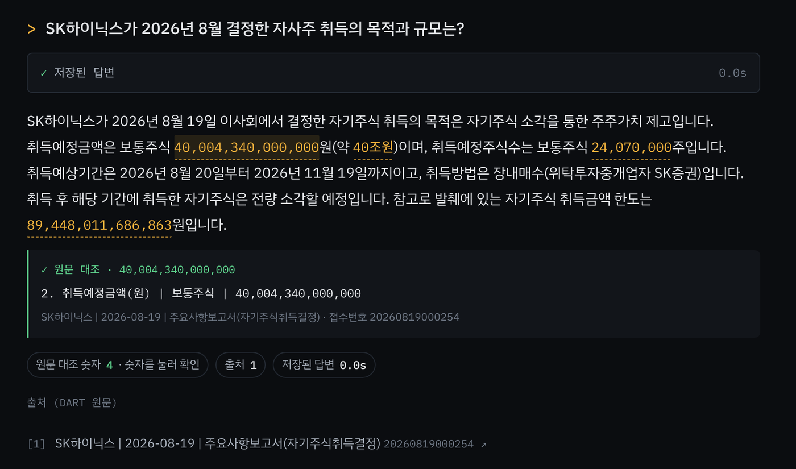
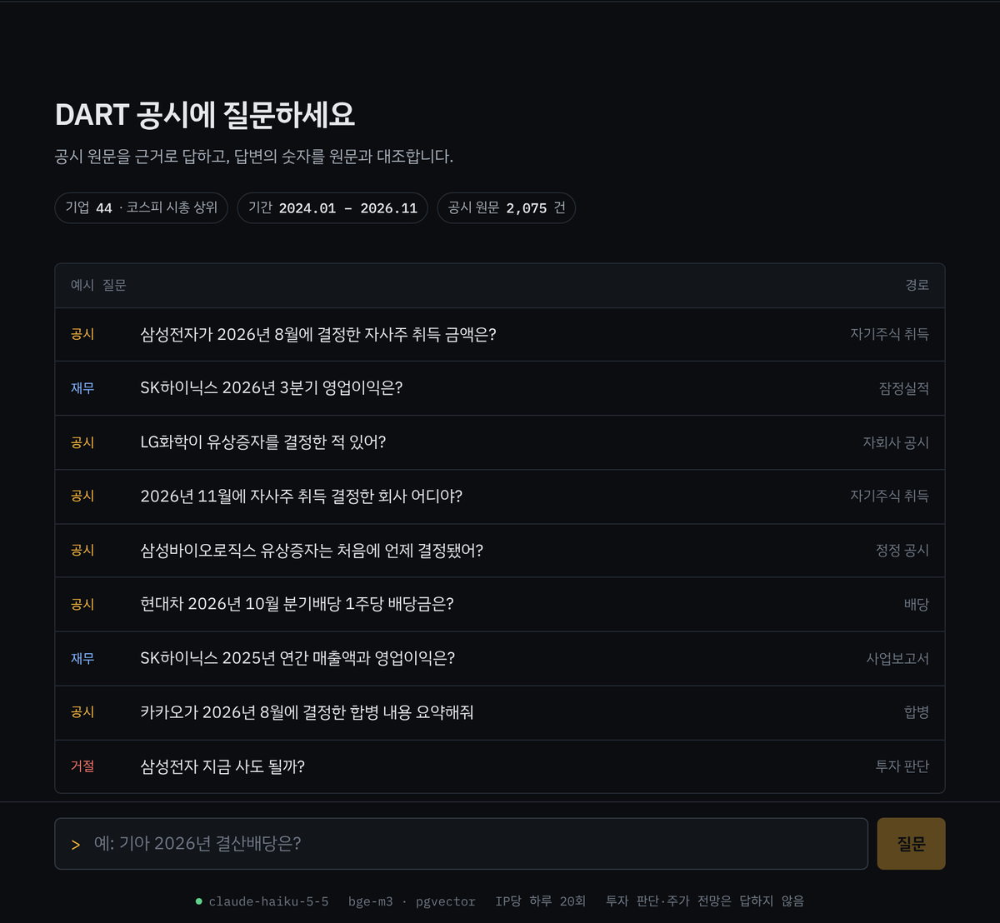

RAG, AI 에이전트
DART 공시 리서치 에이전트
상장사 공시 질문에 원문 근거로 답하고, 답변 속 숫자를 원문과 코드로 대조하는 RAG 에이전트
| 기간 | 2026.11 |
|---|---|
| 형태 | 1인 (기획·데이터·백엔드·프론트·배포) |
| 기술 | LangGraph, Claude API, pgvector, bge-m3, bge-reranker, FastAPI, Redis, Next.js, Docker, AWS EC2 |
| 코드 | github.com/suipizza/dart-research-agent |
47% → 70%검색 1위 정답률
3 → 0환각 답변 (테스트 20문항)
73문항직접 만든 평가셋
문제
- 공시는 표가 많고 길어 여러 조각으로 잘림: 원문의 77%가 여러 청크로 나뉨
- 자회사 결정을 모회사가 낸 공시 26%, 뒤에 정정되는 공시 20%. 그대로 답하면 회사나 숫자가 틀림
설계와 구현
- DART Open API로 코스피 상위 44곳 공시 2만여 건 수집, 2,075건 본문 청킹·임베딩 후 pgvector 적재
- LangGraph: 질문 분석 → 재무 API 조회 / 공시 검색 → 답변 생성 → 숫자 대조 → 실패 시 검색 완화·재작성
- 청크 머리말(회사·날짜·공시명·섹션), 잘린 표의 열 이름 반복, cross-encoder 재순위를 하나씩 비교해 적용
- 검색은 청크 단위, 답변 근거는 공시 전체로 분리. 자회사 공시 후순위, 정정 공시 함께 조회
평가
- 정답을 DART 원문·공식 API로 확인한 평가셋 73문항 (개발 53 / 테스트 20 분리)
- 숫자는 코드로, 문장은 LLM으로 채점 (사람 채점과 15/15 일치)
- 검색 평가는 LLM 호출 없이 반복 실험: hit@1 0.47 → 0.70, MRR 0.54 → 0.78
- Haiku와 Sonnet 차이는 53문항 중 3개, 둘 다 틀린 문항은 모두 검색 실패 → 검색 개선에 집중
운영
- Docker Compose 5개 컨테이너로 AWS EC2 배포, Redis 캐시(같은 질문 0.14초)·호출 제한
- Langfuse 단계별 추적, GitHub Actions(ruff · pytest 88개)
화면과 구성


AI 활용Claude Code로 구현. 구조 설계, 평가셋 구축, 실험 설계와 결과 판단은 직접